陪你打磨细节
从动作的情绪张力，到作品集的逻辑串联，让每一页都在说你的故事。
一个以艺术交叉为主的创意工坊，面向舞蹈、戏剧、影视等相关艺术背景的创作者与爱好者。
Act 01 / Opening
「搞点逸术」关注艺术创作的台前幕后：身体、镜头、文本、心理、装置、作品集与升学路径。它不急着把人塞进单一模版，而是陪你拆解目标、磨细节、找到可以持续生长的表达方式。
从动作的情绪张力，到作品集的逻辑串联，让每一页都在说你的故事。
舞蹈、戏剧、影视、疗愈与视觉表达在这里彼此借光。
方向对了，努力才有意义。用清晰路径替代焦虑消耗。
Act 02 / Workshops
从肢体到戏剧到影像，从舞动到表达再到疗愈，总有一款适合你。每个主题都可以独立体验，也可以组合成更完整的成长路线。
在体验中找到自己的艺术语言，适合跨媒介创作者和艺术爱好者。
从 0 到 1 定制选题、素材、呈现和叙事线。
聚焦艺术院校与专业方向，拆解备考节奏与作品表达。
由舞蹈、戏剧、影视及艺术研究背景的导师共同支持。
在北京朝阳的艺术街区里，把空间变成创作的一部分。
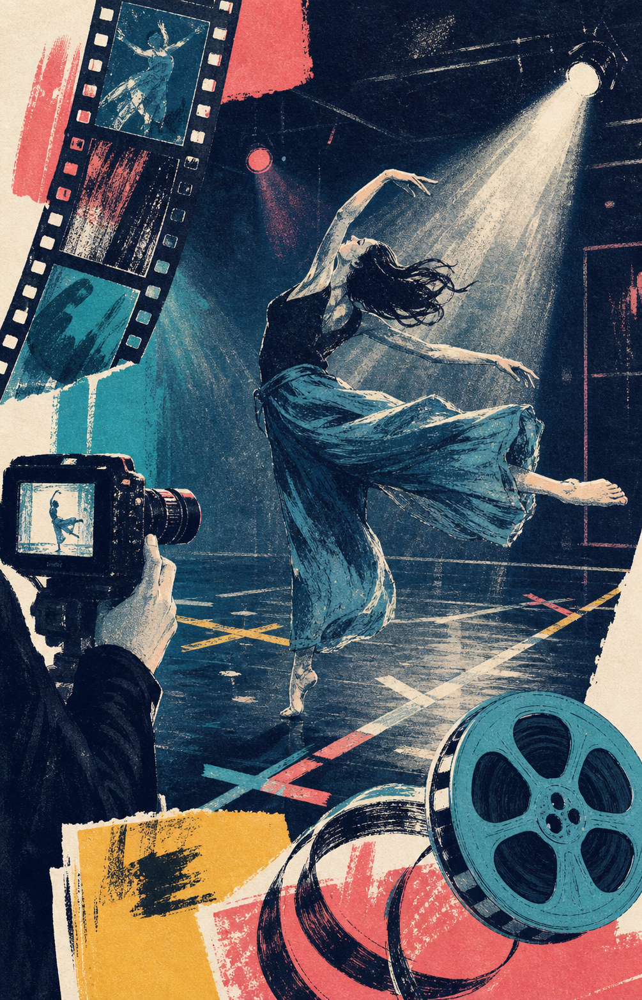
用镜头写诗，学习创意策划、肢体编排、视听语言、后期剪辑与制片管理。
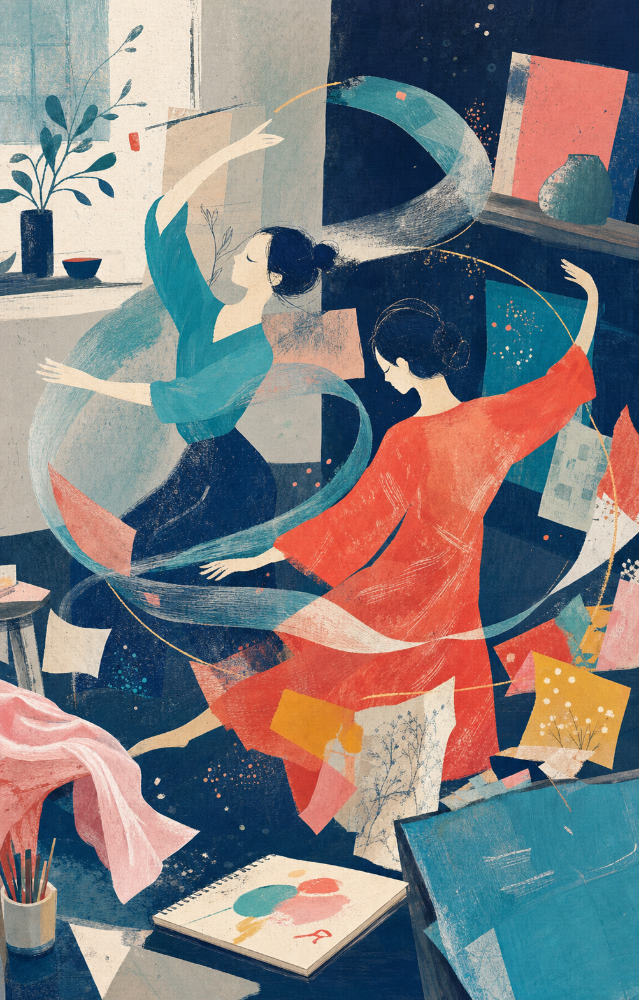
以舞动治疗、戏剧治疗为主，释放压力，学会与自己温柔对话。
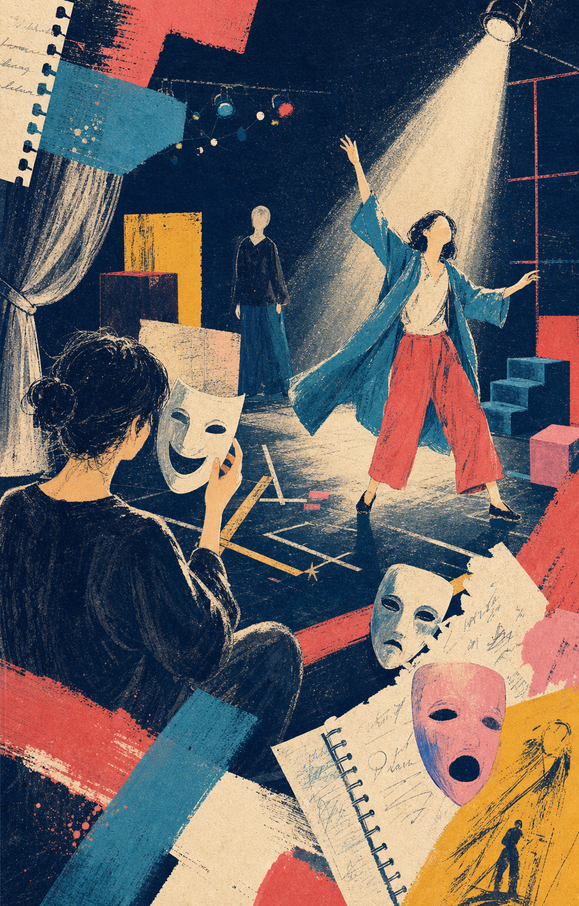
没有固定剧本，只有你的故事。把脑洞变成可触摸的现场。
Act 03 / Portfolio
Act 04 / Faculty
团队由艺术研究、舞蹈、戏剧、影视与跨媒介创作背景的导师组成，适合正在准备作品集、升学、跨专业表达或寻找创作出口的人。
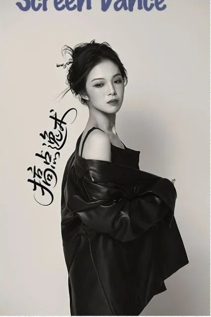
搞点逸术 GuardianArt 主理人 / 舞蹈影像导演 / 音乐剧演员&编舞
本科毕业于北京舞蹈学院舞蹈学系，中国艺术研究院戏剧影视表演 MFA，北京舞蹈家协会会员。担任导演和执行导演的多部舞蹈影像作品获国内外舞蹈影像节、电影节、广告赛事大奖。
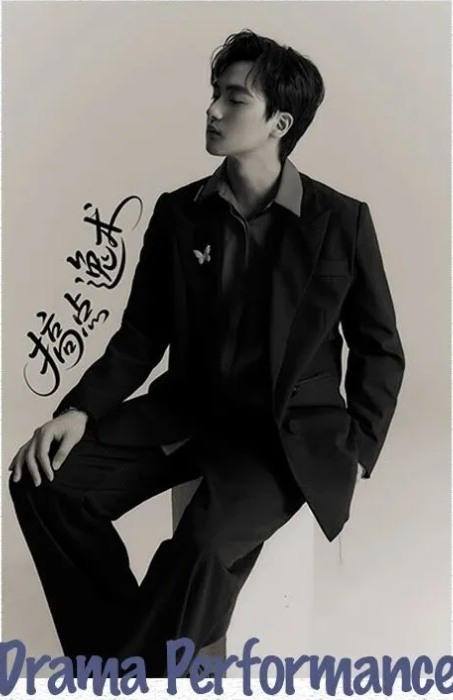
搞点逸术 GuardianArt 联合创始人 / 北京拾木剧团主理人 / 拾人表演工作室创始人
本科毕业于中央戏剧学院话剧影视表演专业，中央戏剧学院优秀毕业生，中央戏剧学院优秀毕业论文作者，曾任中央戏剧学院实验剧团演员。
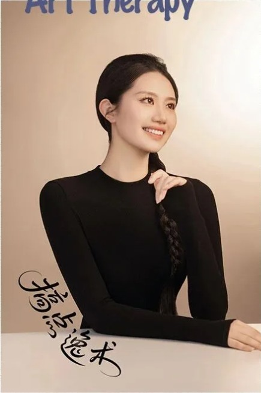
现任高校舞蹈治疗教师 / 德国舞动治疗师 BTD（受训中）/ 表达性艺术治疗师（受训中）
本硕毕业于北京舞蹈学院舞蹈学系，中国艺术医学协会会员，长期专注舞蹈教育与舞蹈治疗，以专业理论为基础构建独特教学与治疗逻辑。
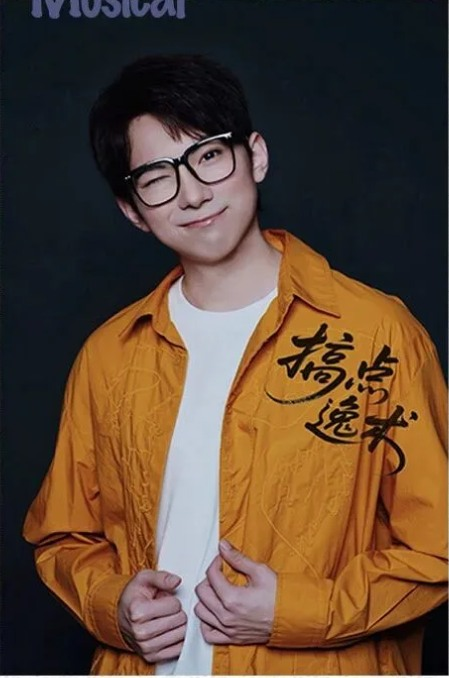
音乐剧导演 / 编舞 / 演员
本科毕业于北京舞蹈学院音乐剧系，北京大学艺术学院音乐剧 MFA（第 1 名），北京大学艺术学院艺术学博士，北京市优秀毕业生。
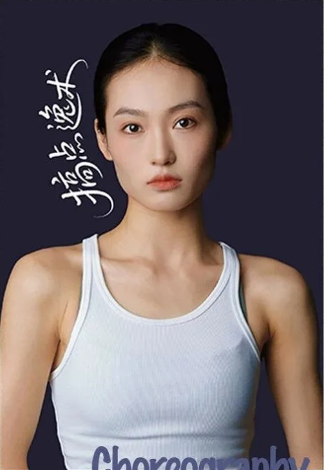
舞者 / 演员 / 编导
本科毕业于北京舞蹈学院编导系，曾获韩国国际现代舞比赛 KICDC 成年组铜奖，先后推进顶尖舞者全国赛、意大利国际舞蹈人才大赛等国际赛事。
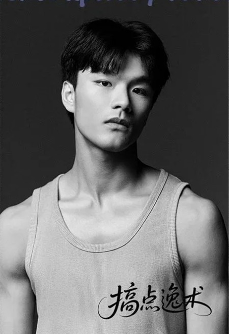
舞者 / 编导
本科毕业于北京舞蹈学院现代舞系，北京雷动天下现代舞团舞者，合作编舞家包括曹诚渊、阿迪亚、刘斌、吴冕等，作品曾入围国内外舞蹈影像节。
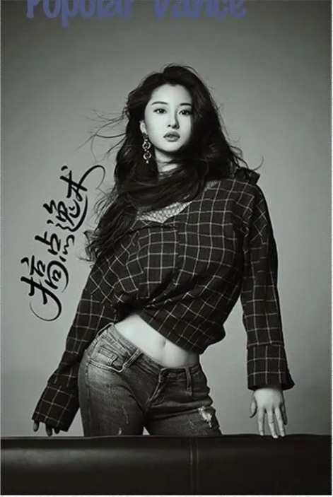
舞者 / 流行舞&国标舞编舞 / 舞蹈博士
本科毕业于北京舞蹈学院舞蹈学系，北京舞蹈学院外国舞表演研究与奥克兰大学舞蹈教育双硕士学位。曾任舞蹈风暴青少年组全国总决赛评委，并多次为明星编舞。
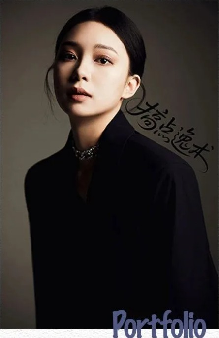
舞评人 / 舞蹈理论研究者 / 制作人
留美期间曾任殷梅舞团经理助理、利蒙现代舞团实习，主要研究美国后现代舞、中国现当代舞与舞蹈跨文化传播，创作影像作品多次入围国内外舞蹈影像节。
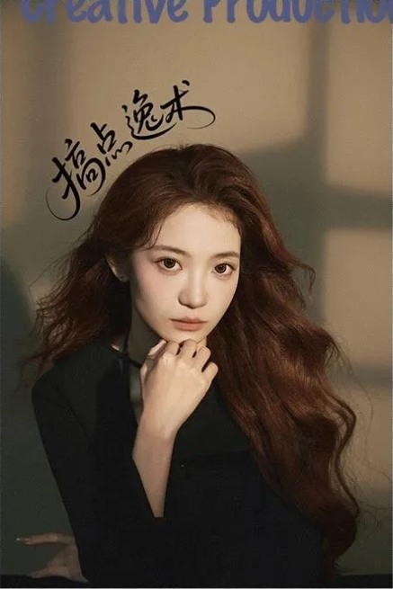
戏剧制作人 / 影像制片 / 导演 / 舞台监督
本硕毕业于北京舞蹈学院艺术传播系艺术管理专业，曾于中国台湾中国文化大学戏剧系交换，参与制作多部大型舞台作品、小剧场作品与舞蹈影像作品。
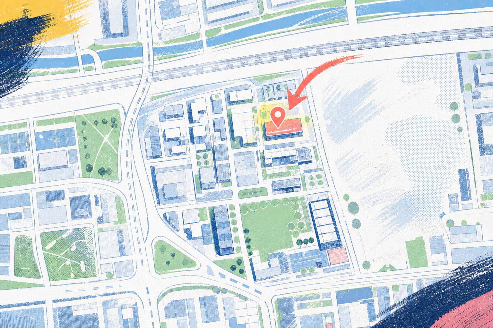